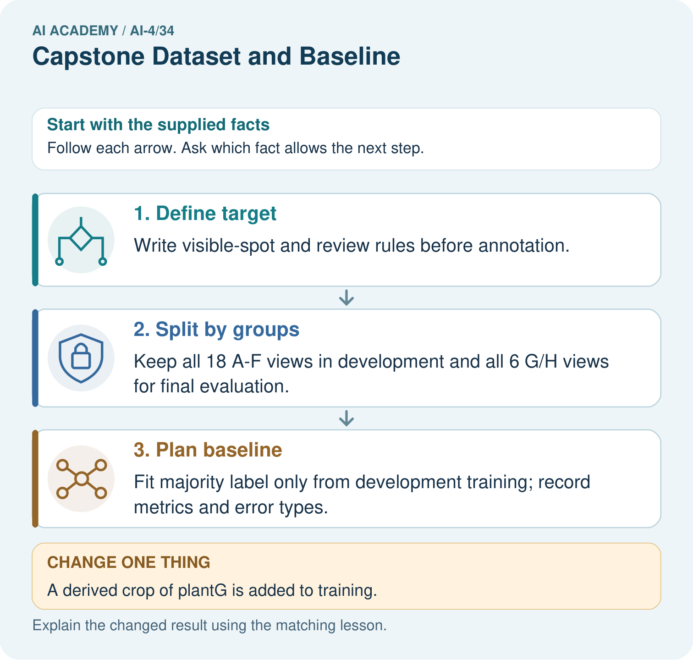

AI Academy · Level 4 · Grade 9 · Week 34 · Teacher guide
Capstone Dataset and Baseline
Learn to understand, design, build, test and explain AI systems responsibly.
Project: Responsible Plant Classifier
Teacher guide · 1 of 6
Capstone Dataset and Baseline
Teach the learning cycle
Primary target: Define a feasible capstone question and acceptance criteria
| Session | Sequence and minutes | Resources |
|---|---|---|
| Session 1 · Understand · 45 min | 0–7: recall and prerequisite; 7–15: inspect the concrete case and predict; 15–30: teacher models the worked trace; 30–40: learners explain a step using the text and visual; 40–45: check the core idea. | Sections 1–6; record the brief recall in the workbook. |
| Session 2 · Practise · 45 min | 0–5: retrieve the procedure; 5–15: W2 completion practice; 15–23: explain and check with a partner; 23–30: each learner answers the misconception check; 30–40: targeted reteaching or a harder variation; 40–45: prepare the investigation. | Sections 7–10; use the matching workbook W2 and misconception check. |
| Session 3 · Investigate and transfer · 45 min | 0–5: retrieve the decision rule; 5–20: investigate or trace; 20–30: start the independent case; 30–38: connect the project; 38–43: act on feedback; 43–45: plan the return check. | Sections 9 and 11–14. Give extra time to finish the full task set; use Section 15 when the week includes a coding lab. |
This is a starting allocation of 135 minutes, not a validated duration. Preserve all named topics. Schedule extra time for connected examples, the full investigation, independent cases and project building. Repeated copies of a case share one recorded attempt; they are not new evidence.
Retrieval answer guidance
Model Cards and Human Review
Without opening the old lesson, explain one key idea from Model Cards and Human Review. Give an example and a mistake that the idea helps you avoid.
Look for: Write a model card whose claims match evidence
Reference example, not the only acceptable wording: Teacher explanation: Intended: compare toy classifiers on the documented fictional task. Not supported: real parcel handling, student assessment or decisions outside the evaluated setup.
Subgroup Performance
Without opening the old lesson, explain one key idea from Subgroup Performance. Give an example and a mistake that the idea helps you avoid.
Look for: Calculate subgroup results with sample sizes
Reference example, not the only acceptable wording: Teacher explanation: A 2/20=10 percent; B 3/5=60 percent; pooled 5/25=20 percent, a 50-point group gap.
Learning Curves
Without opening the old lesson, explain one key idea from Learning Curves. Give an example and a mistake that the idea helps you avoid.
Look for: Read training-size learning curves
Reference example, not the only acceptable wording: Teacher explanation: Mean(5+7+6)/3=6; range 7-5=2.
Use the student module and workbook section with this exact week title. The worked case, independent question and answers below form one aligned lesson sequence.
What the learner must demonstrate
A capstone has two views of each of 40 leaves. Specify a 24/8/8 leaf split and baseline procedure. When may final labels be consulted?
Concept to explain
A responsible capstone begins by freezing the problem, intended use, dataset documentation, grouped split, and baseline evidence.
| Term | Meaning |
|---|---|
| freeze | lock a reviewed version for comparison |
| acceptance test | observable required behavior |
| baseline result | simple method's measured performance |
| evidence bundle | linked artifacts supporting a claim |
Prepare the class
Use the supplied scenario, student illustrations and blank paper. For numeric work, offer counters or a calculator after learners show the setup. Fictional records are supplied; personal data and paid accounts are unnecessary.
Allow 80 minutes: recall 8; explanation 12; worked demonstration 15; guided practice 20; independent assessment 15; project and reflection 10. Extend the lab into a second session when needed.
Preparation for the connected explanation
Teach two 45-minute sessions. This week focuses on capstone data and requirements. Model the worked example first, collect the new W 4 case independently before feedback, and use the fresh retry to check transfer. Award credit for traceable reasoning and bounded claims, including justified uncertainty.
Readiness answer
Task, data roles, metric, baseline, tie policy and intended use.
Printed student lesson and workbook
Paper, pencils and a calculator for fractions
The fictional examples and a blank evidence table
Saved classroom project records for critique; no personal student dataset required
Optional reproducible data kit: create IDs i=0 through 71, width=2+(i mod 9) cm, height=2+floor(i/9) cm, and group ID equal to i. Each record is a distinct fictional parcel. Reference label is blocked when width+height is at least 12, otherwise clear. These are invented operational labels, not real parcel safety labels.
Split by (5*i) mod 18: values 0–9 go to training, 10–14 to validation, 15–17 to final test. This gives 40/20/12 rows. Prepare the kit before class, check both classes in each split, and distribute final-test features without labels. Keep the final key in teacher materials. The constructed split is not a random sample; students must report that limitation.
Apply the connected idea: Capstone models and baselines
Teach two 45-minute sessions. This week focuses on capstone models and baselines. Model the worked example first, collect the new W 4 case independently before feedback, and use the fresh retry to check transfer. Award credit for traceable reasoning and bounded claims, including justified uncertainty.
Readiness answer
Task, features, group-aware splits, metric, baseline and selection policy.
Printed student lesson and workbook
Paper, pencils and a calculator for fractions
The fictional examples and a blank evidence table
Optional Python 3 editor; no external packages or AI accounts required
End goal for the pictorial case
By the end, I can explain capstone dataset and baseline using a traced example and a stated limitation.
This added worked case illustrates the week’s main idea. Retain all original and connected topics; schedule its practice within the teaching cycle.
Teacher guide · 2 of 6
Explain the mechanism
Explain the mechanism
Trace the information, fitted behavior, and evaluation proof separately.
QUESTION Freeze the dataset card, split, and baseline results before training.
MODEL IDEA A responsible capstone begins by freezing the problem, intended use, dataset documentation, grouped split, and baseline evidence.
PROOF NEEDED Use an unseen case, visible calculation, error analysis, and a stated limitation.
UNDER THE HOOD Freeze dataset card v3 and grouped split s2 with no plant identity crossing sets. Test set remains sealed; validation supports model choices.
Draw a fresh data → model → prediction → evaluation trace:
Predict first. Then check each step. A correct answer without visible evidence cannot be audited.
STEP 1 Freeze dataset card v3 and grouped split s2 with no plant identity crossing sets.
STEP 2 Test set remains sealed; validation supports model choices.
STEP 3 Validation has 12 healthy and 8 spotted leaves. The always-healthy baseline scores 12/20=60% accuracy and 0/8=0% spotted recall. The rule has TP=5, FN=3, TN=10, FP=2: accuracy 75% and spotted recall 62.5%.
STEP 4 Acceptance requires valid citations, metric calculations, subgroup review, and safe escalation.
CHECK Verify the denominator, unit, split, class definition, and data version before interpreting a score.
Recalculate, retrace, or restate the evidence independently:
Concrete teaching case
Capstone has60 independent leaves, several photos per leaf, healthy/spotted labels.
Plan grouping and baseline.
Exact explanation to model
Keep all views together in train/validation/test partitions. Define labels/use, fit a majority baseline on training labels and evaluate declared metrics.
Explain the added worked example
The capstone is a classroom investigation, not a product launch. Choose the supplied fictional clear/blocked parcel task or an equally bounded teacher-approved synthetic task. Write a question that can be answered by comparing a simple model against a baseline. Do not use private student records or real safety decisions.
Use fictional classroom data throughout this investigation. Keep the task, units, reference labels and data split visible as you reason. Earlier weeks supplied the model-building process; this week examines capstone data and requirements.
Example proposal: can a small classifier improve validation accuracy over the training-majority baseline on fictional parcel measurements? Before modelling, assign 40 training, 20 validation and 12 final-test records, with related parcel groups kept together. Define blocked as positive, keep a fixed label rule, and reserve test labels with the teacher until Week 35.
Before continuing, underline the decision rule and circle the evidence that supports the conclusion. Explain the example to a partner without replacing the counts or conditions with a stronger claim. Keep the distinction between an observed result and a proposed next step.
Your teacher can prepare the 72-record fictional grid described in the teacher guide, or approve another documented synthetic dataset. Each supplied record has an ID, group ID, width and height in cm. Training and validation labels are released for development; final-test labels stay with the teacher until the model is frozen. The numerical results in later worked examples are illustrative and are not expected scores for your project.
Key terms
| Term | Meaning |
|---|---|
| Requirement | A concrete condition the project must meet |
| Acceptance criterion | Evidence that decides whether a requirement is met |
| Data dictionary | Definitions and units for dataset fields |
| Milestone | A review point with a stated deliverable |
Apply the connected idea: Capstone models and baselines
Build the baseline before the candidate. For classification, use the most common training class, with a declared tie policy. Choose one simple candidate using techniques already learned, such as k-nearest neighbours with training-only scaling and a fixed k. Record every development attempt; complexity earns no automatic credit.
Use fictional classroom data throughout this investigation. Keep the task, units, reference labels and data split visible as you reason. Earlier weeks supplied the model-building process; this week examines capstone models and baselines.
Illustrative training has 30 clear and 10 blocked cases, so the baseline always predicts clear. On 20 validation cases with 14 clear and 6 blocked, its matrix is[[14, 0],[6, 0]], accuracy 70 percent. Candidate matrix[[12, 2],[2, 4]] gives accuracy 80 percent, precision 4/6 and recall 4/6. These are example results, not the student team results.
Trace the calculation on paper before running this optional Python check. Use the stated fictional inputs and compare intermediate values. The code checks this example; your independent workbook case uses different evidence.
Guided response: Accuracy 16/20=80 percent; precision 4/6 and recall 4/6, both about 66.7 percent; FP 2 FN 2. Exit response: Model and preprocessing version, settings, feature order, split IDs, prediction/scoring rules, validation comparison, metric and decision record.
Model the reasoning aloud
Use the complete worked example below before asking learners to complete W2. Reveal a small part, invite a prediction, then explain the deciding step. These teacher notes contain solutions; do not reveal the independent case answer during modelling.
Capstone data and requirements at a glance
| Thinking move | Teacher prompt |
|---|---|
| Plan | What is given? What is the question? Which procedure fits these facts? |
| Do | Point to each input and intermediate step in the worked trace. Name the rule that allows the next step. |
| Check | Does the output answer the question? Which assumption or limitation prevents a larger claim? |
Use the diagram and verbal explanation together. Ask learners to match a sentence to a specific visual step; do not assign learners fixed visual or auditory learning styles.
A pictorial worked case: Capstone Dataset and Baseline
Plan the plant capstone around independent groups and a baseline before collecting more rows.
The facts we will use
Toy proposed dataset: 8 plants, 3 photos each. Development groupsA–F; final groupsG, H. Target is visible-spot status, with review for hidden leaves.
All inputs and outcomes in this worked example are invented classroom data; no real model run is claimed.

Read the picture one step at a time
Why this result follows
Read the picture in order. Fit majority label only from development training; record metrics and error types. The arrows show which recorded input or intermediate result each decision uses. Explain the deciding step aloud before checking the changed case; pointing to the final answer alone does not show how it follows.
What this example does not establish
A well-planned split does not create sufficient sample size; two held-out plants support only a very narrow claim.
Change one thing in the pictured case
Change: A derived crop of plantG is added to training.
Prediction: The final group separation is violated.
Reason: The crop retains the same source plant identity even with a new file name.
Ask while showing the picture
Cover the result. Ask learners to name the inputs and predict the next step. Uncover one step, connect the icon to the actual procedure, and explain its evidence. Then change the supplied condition and compare. The picture is a representation; it does not document execution of a real AI model.
Teacher guide · 3 of 6
Demonstrate and guide practice
Demonstrate and guide practice
Board sequence
Write the given facts: Capstone has60 independent leaves, several photos per leaf, healthy/spotted labels.
Write the question to explain: Plan grouping and baseline.
Reveal after predictions: Keep all views together in train/validation/test partitions. Define labels/use, fit a majority baseline on training labels and evaluate declared metrics.
Keep for an independent attempt: Your capstone dataset includes duplicate photographs in both training and validation. What should be repaired before measuring the baseline?
Classroom dialogue
Ask: Which facts are given, and which would we have to assume? Learners mark relevant details before discussing answers.
Say: Predict first. Show the rule, information path or calculation that would produce the result. A correct guess is not yet an explanation.
Reveal reasoning one step at a time. Explain why a tempting alternative fails. Write units and denominators for arithmetic, trace conditions for decisions, and identify supporting sources for claims.
In pairs, one learner solves while the other checks evidence; exchange roles. Remove the worked answer before independent assessment.
Model these guided questions
Guided response: Record ID tracks rows, group ID keeps related records together, and width is a potential measured feature available before prediction; IDs are not automatic inputs. Exit response: Label the work as development or a demonstration, report the limitation and avoid an untouched-test claim; do not fabricate test data or results.
Case-specific teaching sequence
| Stage | Teacher action |
|---|---|
| Session 1 start to 7 minutes | Use the prerequisite question: Which evaluation choices should precede model selection? Check the explanation before proceeding. |
| 7 to 18 minutes | Model the worked proposal, then introduce the prepared fictional dataset and its data dictionary. Students choose the supplied task or a bounded approved alternative. |
| 18 to 32 minutes | Teams draft their question, non-use statement and three process acceptance criteria. Use W1–W3 as prompts while preparing the proposal. |
| 32 to 45 minutes | Teams check IDs, units, missing values and split membership. Collect the proposal and identify repairs before any model fitting. |
| Session 2 start to 8 minutes | Retrieve the distinction between requirement and acceptance criterion. Invite a counterexample to an overconfident claim. |
| 8 to 20 minutes | Complete the independent W4 split critique first. Then teams revise their own data plan and document group separation. |
| 20 to 35 minutes | Review each team proposal and data dictionary for feasibility. Confirm synthetic-data scope, task metric and baseline; reserve final-test labels before approving modelling. |
| 35 to 45 minutes | Use W 5 and the exit response to assess limits. Give targeted feedback, then the fresh retry. Save evidence of independent understanding. |
Teach the connected idea
| Stage | Teacher action |
|---|---|
| Session 1 start to 7 minutes | Use the prerequisite question: What must be fixed before the capstone comparison? Check the explanation before proceeding. |
| 7 to 18 minutes | Trace the worked baseline/candidate comparison and check W1–W3 briefly. State that its numbers are illustrative, not target results. |
| 18 to 32 minutes | Teams fit their baseline from training only. Save training class counts, split IDs and baseline validation predictions. |
| 32 to 45 minutes | Teams build one candidate using the earlier k-nearest-neighbour procedure or an approved simple alternative. Check preprocessing and trace one prediction. |
| Session 2 start to 8 minutes | Retrieve the distinction between baseline and prediction ledger. Invite a counterexample to an overconfident claim. |
| 8 to 20 minutes | Teams evaluate on validation, record the full comparison and explain gains and regressions. Log every attempted setting. |
| 20 to 35 minutes | Collect W4 independently, then review team freeze records. Resolve pipeline failures on development data before requesting final-test labels. |
| 35 to 45 minutes | Use W 5 and the exit response to assess limits. Give targeted feedback, then the fresh retry. Save evidence of independent understanding. |
Reduce help deliberately
Completion task: Explain why record ID, group ID and measured width have different roles.
Teacher check: Teacher explanation: Record ID tracks rows, group ID keeps related records together, and width is a potential measured feature available before prediction; IDs are not automatic inputs.
Start by identifying the given inputs together. Leave the intermediate steps blank. If needed, model one step, then withdraw that help on the next step. Move to a full trace only when the partial trace is understood. For partners, alternate explainer and checker; collect a response from every learner before discussion.
Individual reasoning check
Use the worked case for Capstone data and requirements. Proposed explanation: “A final answer is enough”. Decide whether this explanation is supported. Point to the step or supplied fact that decides; explain your repair if needed.
Expected correction: Ask for the relevant counts, units, procedure or saved record. For this week: Compare a simple classifier with a training-majority baseline on the fictional parcel evaluation; no real handling or student decisions are supported.
Collect explanations, not only yes/no votes. If a misunderstanding is common, re-model the relevant step for the class. If it affects a few learners, give a short targeted group explanation while others solve a more demanding variation.
Connected teaching cycle: Capstone models and baselines
Target: Fit and compare a baseline and a simple candidate
Reserve further sessions for this topic; the 135-minute primary plan does not absorb all added content.
Completion practice: Compute the worked candidate accuracy, precision and recall.
Teacher check: Teacher explanation: Accuracy 16/20=80 percent; precision 4/6 and recall 4/6, both about 66.7 percent; FP 2 FN 2.
Individual check: For Capstone models and baselines, use its worked case to evaluate this proposed explanation: “A final answer is enough”. Explain the deciding step.
Expected correction: Ask for the relevant counts, units, procedure or saved record. For this week: Always predict clear from the 30/10 training counts; validation accuracy 14/20=70 percent.
Apply the same support, independent transfer and delayed-review decisions to the named connected-topic workbook tasks.
Pictorial practice question
What provenance field prevents the crop from appearing independent? Point to the relevant step in the picture, then write the changed result and the rule or evidence that supports it.
Reasoned teacher answer
Store original_plant_id=G and the parent image ID; all derived G records must remain with their assigned final group. Changed-case check: The final group separation is violated. The crop retains the same source plant identity even with a new file name.
Changed-case reasoning: The final group separation is violated. The crop retains the same source plant identity even with a new file name.
Collect each learner’s explanation before discussion. Use the first missing connection between input, deciding step and result to choose support. This question is worked-case practice, not fresh mastery evidence.
Teacher guide · 4 of 6
Run the weekly evidence lab
Run the weekly evidence lab
Keep the test conditions fixed, record every result, and change only one planned factor.
1. Write the hypothesis and expected evidence before running.
2. Capstone Gate 1: peer-audit dataset card, leakage, split, baseline calculations, and acceptance tests; repair before build.
3. Run one normal, one boundary, one missing, and one shifted case.
4. Calculate the metric from raw counts or row-level errors.
5. Interpret what changed, what did not, and what remains unsafe or unknown.
Make the lab runnable
Use the concrete case as the shared normal case and the independent question as a second case. Each pair creates a boundary or missing-information case and predicts its result before testing. Keep the expected result separate from an observed mistake.
| Record | What to capture |
|---|---|
| Input or evidence | Exact data, instruction or claim |
| Expected result | Answer or safe fallback declared before the run |
| Observed result | Actual result, including errors |
| Explanation | Rule, calculation or evidence explaining the outcome |
| Next test | One justified change and a new prediction |
Diagnose and reteach
MISCONCEPTION TO REPAIR Capstone work should begin by training the most advanced available model.
For guessing, return to given facts and request a trace. For vocabulary without application, use one example and one non-example. For arithmetic errors, check the setup before the calculation. Finish with a different uncoached case before recording mastery.
Address these additional misconceptions
A final answer is enough: Ask for the relevant counts, units, procedure or saved record. For this week: Compare a simple classifier with a training-majority baseline on the fictional parcel evaluation; no real handling or student decisions are supported.
A stronger claim makes a stronger project: Label the work as development or a demonstration, report the limitation and avoid an untouched-test claim; do not fabricate test data or results.
The new case can be copied from the example: The independent task changes the evidence. Require a fresh explanation: Keep both members of each pair in one split, exclude pair ID from predictive inputs, check group/class coverage and record split membership before training. Reserve final-test labels.
Check these misconceptions
A final answer is enough: Ask for the relevant counts, units, procedure or saved record. For this week: Always predict clear from the 30/10 training counts; validation accuracy 14/20=70 percent.
A stronger claim makes a stronger project: Model and preprocessing version, settings, feature order, split IDs, prediction/scoring rules, validation comparison, metric and decision record.
The new case can be copied from the example: The independent task changes the evidence. Require a fresh explanation: Baseline 9/12=75 percent; candidate 10/12 about 83.3 percent; precision 2/3 and recall 2/3. Candidate FP 1 FN 1 versus baseline FP 0 FN 3.
Match the support to the first error
| What the response shows | Next teaching action |
|---|---|
| Missing or misread facts | Read the case aloud, mark supplied versus unknown facts, and let the learner restate it. |
| Wrong procedure | Return to the deciding step in the worked case. Contrast it with the proposed incorrect explanation. |
| Arithmetic or implementation error | Trace intermediate values or lines; preserve the first mismatch and retry that step. |
| Correct result without a reason | Ask for a trace and a changed case before marking independent understanding. |
| An unsupported wider claim | Ask which supplied evidence supports the claim and which further observation would be needed. |
Offer an oral explanation, drawing, enlarged visual or fewer examples when that removes a reading/writing barrier. Keep the same reasoning goal. Stretch secure learners by changing a boundary or assumption and asking them to defend the effect, not simply by assigning more of the same questions.
Teacher guide · 5 of 6
Assess and explain the answers
Assess and explain the answers
Worked case answer
Keep all views together in train/validation/test partitions. Define labels/use, fit a majority baseline on training labels and evaluate declared metrics.
Independent question
Your capstone dataset includes duplicate photographs in both training and validation. What should be repaired before measuring the baseline?
Expected independent answer
Group duplicates or related examples so they do not cross the split; document the split and evaluate a baseline under the repaired protocol.
What counts as evidence
| Criterion | 0 points | 1 point | 2 points |
|---|---|---|---|
| Result | Incorrect or absent | Partly correct | Correct with necessary conditions |
| Reasoning | No supporting trace | Some steps | Clear mechanism, calculation or source support |
| Limit | Overclaims certainty | Vague limitation | Relevant uncertainty or missing fact |
| Transfer | Copies without adapting | Adapts with prompts | Solves a changed case independently |
Use 6/8 as a classroom checkpoint, with 2 required for both Result and Reasoning. This is a proposed teaching rule, not a validated certification threshold. Do not count a coached answer as independent mastery; correct unsafe or unsupported claims regardless of total.
Feedback
Ask the learner to find the evidence that challenges this claim: “Duplicate images in validation provide independent evidence because their filenames differ.” Keep the first attempt and an uncoached retry separate.
Original transfer answer
Keep paired views together: train=48 images, validation=16, test=16. Fit the majority label from training labels; choose metrics and model settings with training/validation. Consult final labels only after selecting the system for its final evaluation.
Explanations for the additional workbook examples
W1 State a question
Write a bounded question and a non-use statement for the supplied task.
Teacher explanation: Compare a simple classifier with a training-majority baseline on the fictional parcel evaluation; no real handling or student decisions are supported.
W2 Define fields
Explain why record ID, group ID and measured width have different roles.
Teacher explanation: Record ID tracks rows, group ID keeps related records together, and width is a potential measured feature available before prediction; IDs are not automatic inputs.
W3 Set criteria
Name three acceptance criteria that do not require the candidate to win.
Teacher explanation: Examples: no group overlap, all planned predictions accounted for, matched baseline comparison and documented limitations with denominators.
W4 Apply independently
A proposed 80-row dataset has 40 related pairs, and the team splits individual rows randomly then uses pair ID as a feature. Revise its plan.
Teacher explanation: Keep both members of each pair in one split, exclude pair ID from predictive inputs, check group/class coverage and record split membership before training. Reserve final-test labels.
W5 Prepare a fallback
What should the team do if it cannot obtain a valid untouched final test?
Teacher explanation: Label the work as development or a demonstration, report the limitation and avoid an untouched-test claim; do not fabricate test data or results.
Capstone models and baselines — W1 Build the baseline
State the worked training-majority rule and validation accuracy.
Teacher explanation: Always predict clear from the 30/10 training counts; validation accuracy 14/20=70 percent.
Capstone models and baselines — W2 Evaluate the candidate
Compute the worked candidate accuracy, precision and recall.
Teacher explanation: Accuracy 16/20=80 percent; precision 4/6 and recall 4/6, both about 66.7 percent; FP 2 FN 2.
Capstone models and baselines — W3 Explain the tradeoff
Compare errors rather than only headline accuracy.
Teacher explanation: Baseline FP 0 FN 6; candidate FP 2 FN 2. Candidate finds four more blocked cases while falsely flagging two clear cases.
Capstone models and baselines — W4 Apply independently
Training 18 clear/6 blocked; validation baseline[[9, 0],[3, 0]], candidate[[8, 1],[1, 2]]. Calculate accuracy for each and candidate precision/recall.
Teacher explanation: Baseline 9/12=75 percent; candidate 10/12 about 83.3 percent; precision 2/3 and recall 2/3. Candidate FP 1 FN 1 versus baseline FP 0 FN 3.
Capstone models and baselines — W5 Freeze evidence
List what must be saved before the teacher releases final-test labels.
Teacher explanation: Model and preprocessing version, settings, feature order, split IDs, prediction/scoring rules, validation comparison, metric and decision record.
Assess independent transfer
Selected case: A proposed 80-row dataset has 40 related pairs, and the team splits individual rows randomly then uses pair ID as a feature. Revise its plan.
Selected case answer
Teacher explanation: Keep both members of each pair in one split, exclude pair ID from predictive inputs, check group/class coverage and record split membership before training. Reserve final-test labels.
| Dimension | Evidence required |
|---|---|
| Explanation | Names the applicable idea or procedure and ties it to the supplied facts. |
| Trace and result | Preserves the given inputs and shows the relevant intermediate steps; distinguishes a prediction from an observed execution. |
| Limits | States the assumptions, missing evidence or conditions under which the result would change. |
Record each dimension as not yet, with support, or independent. Accept a valid alternative procedure with a defensible trace. Do not penalise an honestly recorded model failure if the learner correctly explains its evidence and limits.
Feedback that the learner uses
Name the earliest unsupported step and give one action to repair it. Have the learner make that repair now and explain why. Then assess the relevant skill on a fresh, fully specified case. Confirm it was not previously practised with feedback; solve and check the new case before assigning it. A follow-up design prompt is a starting brief, not automatically an equivalent test.
Teacher guide · 6 of 6
Connect and extend learning
Connect and extend learning
Responsible Plant Classifier
Publish the frozen Plant Classifier design-and-data bundle with version IDs and approval record.
Keep the decision, input, result, explanation and remaining limitation in the project evidence record. Retrieve this record next week rather than restarting the project.
Support and stretch
Use a tiny labelled dataset, explicit units and a named positive class. Stretch: require a baseline, held-out evaluation and subgroup or shifted-condition analysis with denominators.
Exit reflection
Ask for one decision the learner can now justify and one situation requiring more evidence or human review. Confidence ratings are separate from correct independent performance.
Bridge to the next week
Next: Week 35: Capstone Train, Analyze, Improve. Retrieve today’s evidence and identify what carries forward and what is new.
Support and fresh reassessment
Provide a blank evidence table and allow a verbal explanation before writing. Highlight the given conditions without supplying the W 4 conclusion. Use requirement and acceptance criterion in full sentences. Extension: alter one condition in the worked example and explain which conclusion changes and which remains supported.
For independent W 4, require: Keep both members of each pair in one split, exclude pair ID from predictive inputs, check group/class coverage and record split membership before training. Reserve final-test labels. Fresh retry: three images of the same fictional parcel must stay in one split. Ask the learner to identify the group and record a split-level check before modelling. Mark each criterion as independent, supported or not yet demonstrated. Reassess the reasoning after feedback; do not replace the first attempt silently.
Next week: Capstone models and baselines. Carry forward the saved evidence and the distinction between development choices and justified claims.
Readiness and reassessment for Capstone models and baselines
Provide a blank evidence table and allow a verbal explanation before writing. Highlight the given conditions without supplying the W 4 conclusion. Use baseline and prediction ledger in full sentences. Extension: alter one condition in the worked example and explain which conclusion changes and which remains supported.
For independent W 4, require: Baseline 9/12=75 percent; candidate 10/12 about 83.3 percent; precision 2/3 and recall 2/3. Candidate FP 1 FN 1 versus baseline FP 0 FN 3. Fresh retry baseline[[8, 0],[4, 0]], candidate[[7, 1],[2, 2]]: accuracy 8/12 versus 9/12, candidate precision 2/3 and recall 2/4. Require the tradeoff and frozen settings. Mark each criterion as independent, supported or not yet demonstrated. Reassess the reasoning after feedback; do not replace the first attempt silently.
Plan the delayed return
Suggested return points in this level: ai-4/35. Use actual classroom dates, adjusting for holidays and gaps. One, three and six teaching weeks are scheduling choices, not a claimed optimal spacing.
At a delayed check, ask for the idea from memory and a changed application. Compare with the earlier independent response and record support used. For a new level, revisit the previous capstone before checking the new prerequisites.
| Record | Teacher evidence |
|---|---|
| Learner code and date | |
| Concept and case used; prior exposure | |
| Explanation / trace / limits | |
| Support and first repair | |
| Changed case and delayed outcome | |
| Next teaching action |
Use the evidence to choose reteaching or the next step. A completed page, confidence rating or attractive project does not by itself demonstrate understanding.
Project evidence from this case
For your Responsible Plant Classifier, save the input, procedure, observed result and limitation of this check. Label this worked example as practice; use a different, previously unreviewed case when checking independent understanding.